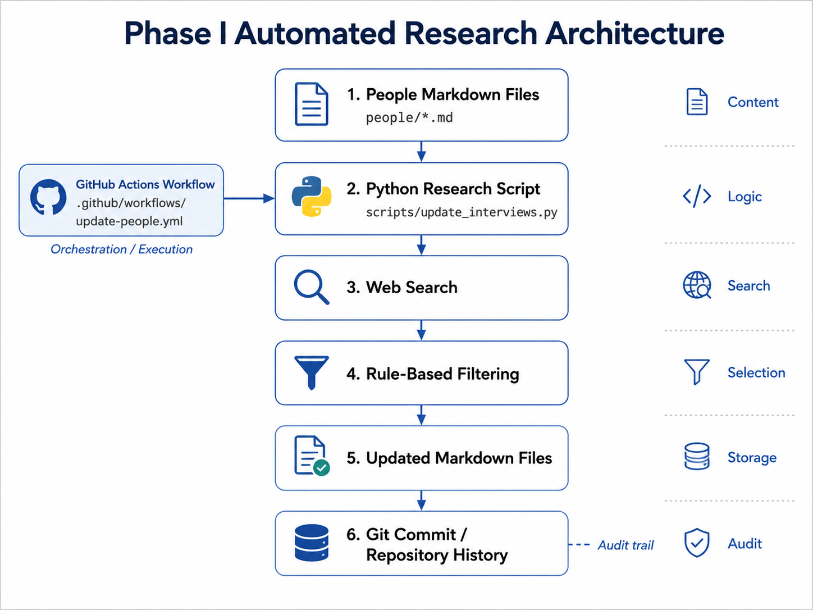

Lab 1: From Manual Research to Automation
Building from First Principles: Automation, Repositories, and Repeatable Workflows
Organizations frequently perform tasks that are individually simple but collectively expensive because the same steps must be repeated many times. Research provides a useful example. Imagine maintaining profiles of 100 influential people. For each person, a researcher might search for recent interviews, review the results, record useful links, and periodically repeat the process.
None of these activities is especially difficult in isolation. The difficulty comes from repetition. If the same procedure must be performed for 100 people every week or every month, a task that initially seemed small becomes a recurring operational process.
Automation addresses this problem by converting a repeated human procedure into a sequence of instructions that a computer can execute. Importantly, automation does not necessarily require artificial intelligence. A programmer specifies the procedure, the computer executes it, and the same procedure can then be applied repeatedly to different inputs.
This lab develops a simple research automation project called infppl. The project stores information about influential people in Markdown files, uses Python to search for recent interviews and podcasts, and uses GitHub Actions to execute the process automatically.
Figure Lab 1a The Phase I Automated Research Architecture

Source: Author-created.
Show long description
The figure presents the architecture of the Phase I research automation. Research subjects are stored as Markdown files in a people directory. A Python script reads those files, identifies each person, performs a web search, applies rule-based filtering to the search results, and writes selected information back into a designated machine-controlled section of each Markdown file. GitHub Actions orchestrates the execution, and Git records the resulting changes as commits. The architecture separates content, program logic, workflow execution, and version history.
The infppl Project
The repository separates research content from the software used to maintain that content. A simplified structure is shown below:
infppl/
│
├── people/
│ ├── 001-stephen-wolfram.md
│ ├── 002-yuval-noah-harari.md
│ └── 003-charles-henry-bennett.md
│
├── scripts/
│ └── update_interviews.py
│
└── .github/
└── workflows/
└── update-people.yml
Each layer has a different responsibility. The Markdown files store the research content. The Python script contains the automation logic. The GitHub Actions workflow determines how that script is executed.
| Component | Primary Responsibility |
|---|---|
| Markdown files | Store human-readable research content about each person. |
| Python script | Defines the procedure used to search, filter, rank, and update research content. |
| GitHub Actions | Orchestrates execution of the Python program. |
| Git | Records changes over time and provides an audit trail. |
Markdown as a Lightweight Knowledge Store
The first design decision concerns how research content should be stored. A relational database could be used, but that would introduce unnecessary complexity for a small project. Markdown provides a useful alternative because it is plain text, human-readable, easy for programs to process, and rendered directly by GitHub.
For example, a research profile can begin with a simple document:
# Stephen Wolfram
## Overview
Stephen Wolfram is a computer scientist, mathematician,
physicist, and entrepreneur.
## Latest Interviews and Podcasts
<!-- AUTO-UPDATE-START -->
No automated updates yet.
<!-- AUTO-UPDATE-END -->
This structure allows the same file to serve several roles simultaneously. It is a research note that a person can read, structured content that software can process, a version-controlled artifact that Git can track, and potential source content for a future webpage.
Defining a Human–Machine Boundary
Automation introduces an important control problem. A research file may contain interpretation, commentary, or manually curated content that should never be rewritten by software. The automation therefore requires a clearly defined boundary.
The AUTO-UPDATE-START and AUTO-UPDATE-END markers define the region that the program is permitted to replace:
<!-- AUTO-UPDATE-START -->
Machine-controlled content
<!-- AUTO-UPDATE-END -->
Everything outside this region remains under human control. Everything inside the region may be refreshed by the program.
Although this is a small technical implementation, it illustrates an important systems principle: automated processes should operate within explicitly defined boundaries. Later, when artificial-intelligence agents are introduced, this separation becomes even more important.
Scaling Through Conventions
One possible design would create a separate Python program for every person being researched. That approach would quickly become difficult to maintain. A more scalable design establishes a convention: every research subject is represented by a Markdown file stored inside the same directory.
people/
├── 001-stephen-wolfram.md
├── 002-yuval-noah-harari.md
├── 003-charles-henry-bennett.md
└── ...
Python can discover these files dynamically:
from pathlib import Path
PEOPLE_DIR = Path("people")
files = sorted(
PEOPLE_DIR.glob("*.md")
)
The expression glob("*.md") retrieves every file in the directory whose filename ends with .md. The automation therefore does not need to know whether the directory contains three people, thirty people, or one hundred people.
Adding another research subject becomes a change to the project’s data, rather than a change to its program logic. This distinction is one of the foundations of scalable system design.
Deriving the Person from the Document
Each Markdown file begins with a first-level heading identifying the research subject:
# Yuval Noah Harari
The Python program can read the first heading and use it as the person's name:
def get_person_name(path):
text = path.read_text(encoding="utf-8")
for line in text.splitlines():
line = line.strip()
if line.startswith("# "):
return line[2:].strip()
return None
If the program reads # Yuval Noah Harari, it extracts the string Yuval Noah Harari. The filename remains useful for human organization, while the document itself provides the identity used by the automation.
Automating Web Search
Once the person has been identified, the program can construct a search query. For example:
"Stephen Wolfram" interview podcast
The same query pattern can be generated for every research subject:
query = f'"{name}" interview podcast'
A search service can then return candidate results containing a title, URL, and descriptive text. The automation has now moved from storing information to retrieving possible new information from an external system.
At this stage, however, retrieval should not be confused with understanding. The program has found pages that may be relevant. It has not established that they are actually useful, current, accurate, or associated with the intended individual.
Deterministic Filtering and Ranking
Phase I uses explicit rules to evaluate search results. For example, a programmer may decide that results containing words such as interview, podcast, conversation, episode, or talk are more likely to be useful.
preferred_words = [
"interview",
"podcast",
"conversation",
"episode",
"talk"
]
Each result can then be assigned a score:
score = 0
for word in preferred_words:
if word in combined_text:
score += 1
The script can also assign additional weight when the person's name appears directly in the title:
if name.lower() in title.lower():
score += 2
This is an example of deterministic decision logic. The program is not independently deciding what constitutes a good research source. The programmer has converted human preferences into explicit scoring rules.
Automatically Generating Markdown
After the highest-ranking candidates have been selected, Python can generate a replacement section in Markdown:
<!-- AUTO-UPDATE-START -->
### Recent Interview / Podcast Candidates
#### 1. Stephen Wolfram on AI and Computation
A discussion of computation, mathematics,
and artificial intelligence.
[Open source](https://example.com)
_Last checked: 2026-08-09_
<!-- AUTO-UPDATE-END -->
The script locates the start and end markers, preserves everything before and after them, and replaces only the content inside the machine-controlled region.
This creates a hybrid information artifact. Human researchers can write interpretation, biography, and commentary, while software maintains selected sections that are suitable for repeated updating.
GitHub Actions as an Orchestration Layer
A Python script defines the automation procedure, but something still needs to execute it. GitHub Actions provides a workflow system in which an automated process is defined using a YAML file. GitHub describes a workflow as a configurable automated process composed of one or more jobs.1
A simplified workflow can be represented as:
name: Update People Research
on:
workflow_dispatch:
permissions:
contents: write
jobs:
update:
runs-on: ubuntu-latest
steps:
- checkout repository
- install dependencies
- run Python script
- commit changed files
The workflow_dispatch trigger allows the workflow to be launched manually from the GitHub Actions interface when the workflow file exists on the default branch.2
The workflow file therefore serves a different function from the Python program. Python describes what the research procedure does. GitHub Actions describes how that procedure is executed.
Execution on a Runner
When the workflow starts, its job runs in a computing environment called a runner. GitHub supports both GitHub-hosted and self-hosted runner environments; in this lab, an Ubuntu GitHub-hosted runner is used.3
Conceptually, the process is:
User runs workflow
↓
GitHub prepares runner
↓
Repository is checked out
↓
Python dependencies are installed
↓
Research script executes
↓
Markdown files change
↓
Git commit is created
↓
Changes are pushed to repository
The important implication is that the automation does not depend on the researcher's personal computer. The repository contains both the project content and the instructions required to process that content.
Git as an Audit Trail
Automation creates another management concern: when software changes information automatically, users need a way to determine what changed.
Git provides this history through commits. Each automated research update can create a commit such as:
Update people research
The commit history allows a researcher to inspect earlier versions, compare revisions, identify when changes occurred, and reverse an update when necessary.
The GitHub workflow can authenticate using the repository's temporary GITHUB_TOKEN. Permissions assigned to that token can be adjusted at the workflow level, including granting the contents: write permission needed for repository modifications.4
Version control therefore makes automated activity observable. Automation does not have to mean invisible or irreversible change.
Scaling from One Person to Many
The central architectural improvement in this project is the move from one script per person to one general procedure that operates on all people.
The program can be summarized as:
Open people/
↓
Find every *.md file
↓
For each file:
↓
Read person's name
↓
Search the web
↓
Score results
↓
Update marked section
↓
Move to next file
The corresponding Python loop is conceptually simple:
for path in files:
update_person_file(path)
This is one of the defining characteristics of useful automation: the procedure is written once and then repeatedly applied to changing data.
When Automation Follows the Rules but Fails
The limitations of deterministic automation become visible when a task depends on interpretation rather than repetition.
Consider the name Charles Henry Bennett. A search engine may return results for more than one historical individual with the same or similar name. The automation may confirm that a result contains the exact string Charles Henry Bennett, yet that result may refer to a different person from the one represented by the research profile.
From the program's perspective, the rule has been followed correctly. The name matched. Preferred keywords may also have been present. The result received a score.
From the researcher's perspective, however, the answer is wrong.
This reveals an important distinction:
Correct execution is not the same as correct interpretation.
Syntax Versus Semantics
The Phase I automation is effective at syntactic matching. It can determine whether certain strings, filenames, headings, and markers are present.
The actual research problem may instead require semantic judgment. A researcher may need to determine whether two pages describe the same person, whether a source is genuinely an interview, whether the publication date is trustworthy, or whether two links refer to duplicate versions of the same appearance.
| Task | Nature of the Problem |
|---|---|
Find every .md file |
Deterministic |
| Read the first H1 heading | Deterministic |
| Replace content between known markers | Deterministic |
| Determine whether two sources refer to the same person | Contextual |
| Determine whether a result is truly an interview | Contextual |
| Assess whether a source is credible | Contextual |
| Summarize the important ideas of an interview | Contextual |
The Limits of Rule-Based Automation
One response to an ambiguous search result is simply to add more rules. For a particular person, the programmer could introduce occupation names, organizations, aliases, dates, and exclusion terms.
if "illustrator" in result:
reject()
if "quantum" in result:
increase_score()
if "IBM" in result:
increase_score()
For an isolated case, this may work well. As the number of research subjects increases, however, the number of exceptions may also grow. Person A may require one set of rules, Person B another set, and Person C yet another.
At some point, maintaining increasingly specific rules may become more difficult than introducing a mechanism capable of interpreting context.
This does not mean deterministic automation is inferior. On the contrary, it is often the preferred approach when the problem is stable, predictable, and expressible using clear rules. The limitation arises when the task itself contains ambiguity.
Automation Is Not Intelligence
The Phase I system can perform several activities that may appear intelligent from the outside. It discovers files, searches the web, evaluates results, updates documents, and creates commits.
Nevertheless, the system has not been given a general reasoning capability. Its behavior remains constrained by predefined procedures.
A useful distinction is:
Automation handles repetition. Intelligence becomes more useful when the task requires interpretation under ambiguity.
This distinction prevents a common conceptual error: describing every automated process as an artificial-intelligence agent.
From Automation to Agentic Research
The Phase I system can be summarized as:
Trigger
↓
GitHub Actions
↓
Python
↓
Web Search
↓
Rule-Based Selection
↓
Markdown
↓
Git Commit
The defining characteristic is that the programmer specifies the decision procedure. The program knows which keywords to count, which filenames to inspect, which document region to replace, and when to create a commit.
Phase II will alter this relationship. Instead of encoding every judgment as a deterministic rule, a language model can be introduced to evaluate contextual questions such as:
- Does this result refer to the intended person?
- Is this page an actual interview or merely an index page?
- Are two search results duplicates?
- What are the main ideas communicated in the source?
- Which evidence is most relevant to the research objective?
The broader progression of the supplemental labs is therefore:
| Phase | Primary Problem | Central Idea |
|---|---|---|
| Phase I: Automation | Repetition | Follow a defined procedure repeatedly. |
| Phase II: Agentic Research | Ambiguity and contextual judgment | Use bounded AI judgment to pursue a research goal. |
| Phase III: Agent Harness | Reliability, control, and repeated autonomous execution | Provide tools, memory, permissions, validation, and safeguards around the agent. |
Phase I therefore establishes the foundation. Before asking a system to exercise judgment, it is useful to understand what can already be accomplished through structured information, explicit rules, orchestration, and version control.
Key Terms and Definitions
- Automation
- The use of software to execute a predefined process repeatedly with limited or no human intervention.
- Repository
- A version-controlled collection of project files, source code, documentation, and history.
- Markdown
- A lightweight plain-text markup format that can be read directly by humans and transformed into formatted documents or webpages.
- Deterministic Logic
- A decision process in which explicitly specified rules determine how a system responds to defined inputs.
- Orchestration
- The coordination of multiple technical steps so that they operate as one larger workflow.
- GitHub Actions
- GitHub's workflow automation system for executing jobs in response to configured events or manual triggers.1
- Runner
- The computing environment that executes the jobs defined in a GitHub Actions workflow.3
- Version Control
- A system that records changes to files over time so that revisions can be inspected, compared, restored, and audited.
- Audit Trail
- A chronological record that makes it possible to determine what changed, when it changed, and which process produced the change.
- Syntactic Matching
- Matching information using explicit strings, patterns, or structures without determining their broader contextual meaning.
- Semantic Judgment
- Evaluation based on meaning and context rather than only explicit textual or structural patterns.
- Human–Machine Boundary
- An explicitly designed separation between information or actions controlled by a human and information or actions controlled by an automated system.
- Agentic Research
- A research process in which an AI system is given a goal and exercises bounded judgment when selecting, interpreting, or acting on information rather than merely applying a fixed sequence of deterministic rules.
Footnotes
- GitHub Docs, “Workflow syntax for GitHub Actions,” https://docs.github.com/actions/using-workflows/workflow-syntax-for-github-actions .
- GitHub Docs, “Manually running a workflow,” https://docs.github.com/actions/managing-workflow-runs/manually-running-a-workflow .
- GitHub Docs, “Contexts reference,” runner context documentation, https://docs.github.com/en/actions/reference/workflows-and-actions/contexts .
- GitHub Docs, “Use GITHUB_TOKEN for authentication in workflows,” https://docs.github.com/actions/reference/authentication-in-a-workflow .